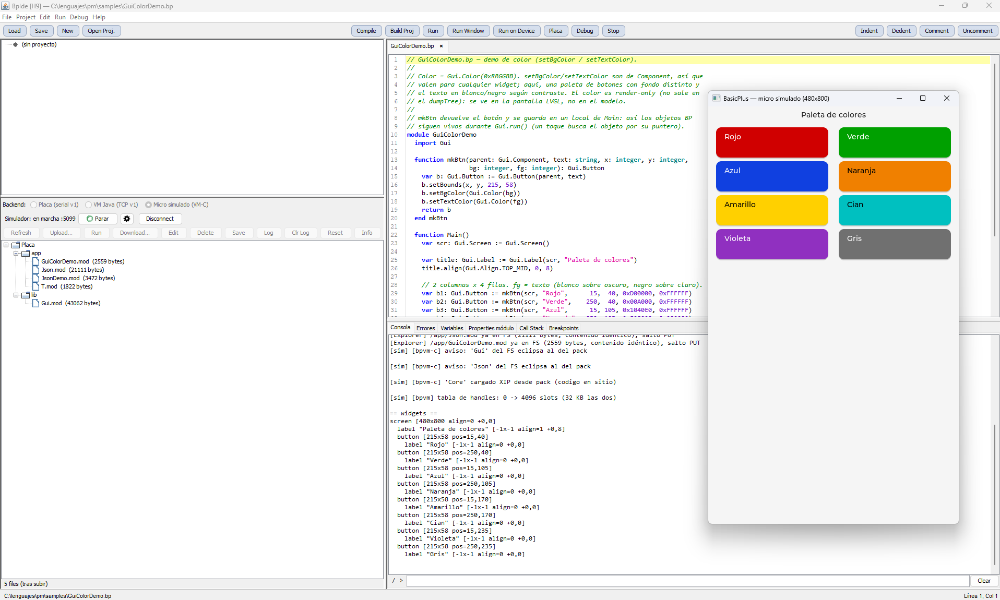

BasicPlus — Guía del IDE
BpIde es el entorno de desarrollo de BasicPlus: editor, compilador, ejecución local y remota, explorador de la placa y depurador.
1. Arrancar el IDE
No hay instalador: se descomprime el ZIP donde quieras y se arranca. Lo único que hace falta tener puesto es Java.
bpide.bato, si lo prefieres a mano:
java -jar BpIde-5.0.jar
Junto al .jar viajan las carpetas de las que el IDE tira solo,
sin configurar nada: la biblioteca de packs
(packs/, §10), el micro simulado (bin/, §6.1), la
documentación (docs/, la que abre Help →
Documentación con F1) y las imágenes de firmware de las placas
(firmware/). Si mueves el jar suelto a otro sitio, deja de
encontrarlas — lo que se mueve es la carpeta entera.
2. La ventana

Cuatro zonas:
- Árbol del proyecto (arriba-izquierda): fuentes, recursos, salida compilada y dependencias del proyecto abierto.
- Editor (arriba-derecha): pestañas con resaltado de sintaxis BP; la línea actual queda marcada y la posición se ve en la barra de estado.
- Explorador de la placa (abajo-izquierda): el selector de backend (Placa serial o VM Java por TCP), el puerto, el botón Connect y — una vez conectado — el árbol de ficheros del micro con su botonera.
- Consola y depuración (abajo-derecha): pestañas
Consola, Errores, Variables,
Properties módulo, Call Stack y
Breakpoints. Abajo, el prompt
/ >de la consola de comandos del micro (§7).
3. Proyectos

Project → New Project crea la estructura estándar;
File → New añade ficheros sueltos. Un proyecto se
describe en su .bpbuild/.bpproject (JSON,
ver la referencia §16) y se
organiza en:
- Sources — los
.bpdel proyecto (en la captura:App.bpyUtil.bp). - Resources — ficheros de datos que el Run copia al micro tal cual (configuraciones, tablas…).
- Output — lo que produce el compilador: los
.mod(bytecode, con su interfaz dentro), el.mdnsi el proyecto usanative, y el.packsi el proyecto empaqueta (§10). - Dependencies — módulos importados resueltos.
4. Editar y compilar
Run → Compile compila el fichero o el proyecto; los diagnósticos aparecen en la pestaña Errores con su fichero, línea, columna, tipo (léxico / sintáctico / semántico) y mensaje, separando errores de avisos. Doble clic en una fila salta a esa posición en el editor.

El compilador no se detiene en el primer error ni se
ahoga en cascadas: se recupera a nivel de sentencia/función y sigue,
de modo que una sola pasada saca a la luz errores reales de todo el
módulo. En la captura conviven un error léxico+sintáctico (un
= donde iba := — el lenguaje usa
:= para asignar) y, en otra función más abajo, un
identificador no declarado: el fallo de la primera no oculta el de la
segunda. Las cascadas espurias se podan (un operando ya erróneo no
genera errores derivados) y, si hubiera muchísimos, se recortan con
un «y N más».
5. Ejecutar (y parar)
- Run → Run: ejecuta en el PC, sobre la VM Java (daemon local). La salida del programa llega a la Consola.
- Run → Run on Device: sube el
.moda la placa conectada (con las dependencias que falten y los resources del proyecto) y lo ejecuta allí; la salida vuelve en vivo a la Consola. - Run → Stop (Ctrl+F2): aborta el programa en marcha — local o en placa — sin reiniciar nada. En la placa es un KILL cooperativo: la VM muere limpia y el micro sigue respondiendo.
Si el programa pide datos al usuario con IO.prompt, el
IDE despliega un formulario y la ejecución se pausa hasta que lo
rellenas: campos de texto, numéricos, casillas y desplegables según
lo que el programa declare.

IO.prompt es una utilidad de desarrollo de la VM Java
(PC): el formulario lo dibuja el IDE. En los micros no está disponible
— allí IO.prompt lanza un RuntimeError
atrapable, así que envuélvelo en try/catch si tu programa
ha de correr también en placa.
5.1 native (AOT): el compilador de C
Si el programa usa function native, en Run on Device el
IDE compila esas funciones a código máquina (.mdn) y lo sube
junto al .mod. Para ese paso hace falta un compilador de
C cruzado — y no viene con BasicPlus: no es nuestro,
así que se instala aparte. Cuál, depende de la placa:
| Placas | Compilador | De dónde sale |
|---|---|---|
| RP2350 (Pico 2, Metro) y STM32 | arm-none-eabi-gcc |
Arm GNU Toolchain — y si ya usas STM32CubeIDE o el pico-sdk, ya lo tienes |
| ESP32-P4 | riscv32-esp-elf-gcc |
viene dentro del ESP-IDF (guía de instalación de Espressif) — versión 6 o posterior |
| ESP32-S3 | — | en esta versión native corre interpretado en el S3 |
Lo del ESP-IDF hay que decirlo claro. Programar en BasicPlus
no exige tener el ESP-IDF instalado — se puede tener un P4, escribir,
subir y ejecutar sin haber visto nunca una línea de C. El ESP-IDF hace falta
sólo si quieres usar function native en esa placa,
y entonces se instala aparte por la guía de Espressif. Y que sea
la versión 6 o posterior: el P4 necesita un compilador RISC-V
que las versiones anteriores no traen en condiciones, y compilar con uno viejo
da problemas en vez de un error claro. Si tienes varias instaladas, el IDE
coge la más nueva.
Para el ARM, si lo instalas a mano:
- Windows — el instalador del Arm GNU Toolchain (arm-none-eabi) de developer.arm.com. Si ya usas STM32CubeIDE o el pico-sdk, ya tienes uno instalado.
- Linux —
sudo apt install gcc-arm-none-eabi(Debian/Ubuntu) o el paquete equivalente de tu distribución.
El IDE lo autodetecta (la instalación estándar del Arm GNU
Toolchain, o el PATH). Si no lo encuentra, se fija a mano en
Project → AOT (toolchain)…: la ruta de
arm-none-eabi-gcc y la raíz de bpgenvm-c (aporta
las cabeceras del runtime), cada una con su botón Detectar. Ese
ajuste es por máquina; qué proyectos usan AOT (y para qué placa) va en el
.bpbuild del proyecto (sección "aot").
El compilador es opcional, y esto es lo importante: si no está, no se rompe nada. El IDE avisa y esas funciones corren interpretadas — mismo comportamiento, menos velocidad en los kernels de cómputo. Todo lo demás (compilar, subir, ejecutar, depurar, packs, la interfaz gráfica) funciona igual sin haber instalado nada.
6. Conectarse a la placa
En el Explorador: elige backend Placa (serial v1), el puerto COM del micro y pulsa Connect. El árbol muestra el filesystem interno del dispositivo:
/app— tus programas (.modsubidos)./lib— la biblioteca estándar embebida en el firmware (se reinstala sola en cada arranque)./sys— configuración:board.json(identidad de la placa),device.json,auto.txt(autorun, §12).
La botonera opera sobre el fichero seleccionado: Refresh, Upload, Run, Download, Edit (abre un editor sobre el fichero del micro — también con doble clic), Delete, Save (persiste el FS a flash), Log/Clr Log (el log persistente del firmware), Reset e Info (§8). La barra inferior del panel resume el FS: ficheros, bytes usados y libres.
El mismo panel sirve para la VM Java (TCP v1): apuntas a un daemon local o remoto y obtienes el mismo árbol y los mismos botones — el protocolo es idéntico.
6.1 El micro simulado: una placa que no existe
El tercer backend, Micro simulado (VM-C), es una placa de mentira que corre en tu PC. No es un emulador de silicio: es la misma VM-C que va en los micros, compilada para el ordenador y servida por TCP — el IDE la trata exactamente igual que a una placa de verdad. El mismo árbol de ficheros, los mismos botones, el mismo depurador.
Sirve para lo que uno esperaría —probar sin tener la placa delante, o mientras la tienes ocupada— pero sobre todo para lo que no se puede hacer con la VM del PC a secas: el micro simulado tiene pantalla. Un programa con interfaz gráfica se ve en su ventana, pintado por el mismo LVGL que pinta en la placa.

En la captura, GuiColorDemo corriendo en un micro simulado con
pantalla de 480×800 —el tamaño está en su configuración, no
en el programa—. Abajo a la izquierda, el selector de backend con
las tres opciones y el simulador «en marcha :5099»; y en la consola, dos
líneas que cuentan de dónde salió cada módulo: Gui, del sistema
de ficheros, eclipsando al del pack (§10.2), y Core, cargado
XIP desde el pack —el código se ejecuta donde está, sin copiarse.
Arrancarlo y pararlo se hace desde el propio panel: Arrancar lo lanza y Parar lo detiene; el botón del engranaje abre su configuración. Y ahí está lo interesante — el «silicio» es configurable:
- RAM y PSRAM — para probar tu programa con la memoria que de verdad tendrá el micro al que va destinado, no con la del PC. Es la forma barata de descubrir que no cabe.
- Flash — el tamaño del volumen, que se reparte igual que en una placa (§9.2).
- Pantalla — ancho y alto, o sin pantalla. Puedes comprobar cómo queda tu interfaz en 480×320 y en 800×480 sin tener las dos placas.
Su «flash» y su sistema de ficheros son ficheros del PC y persisten entre arranques, igual que en una placa: lo que subas sigue ahí mañana. Al arrancar por primera vez el FS está vacío —a diferencia de una placa, que trae la biblioteca estándar embebida en el firmware—, así que el IDE le graba la biblioteca de packs que acompaña a la instalación (§10).
El micro simulado no tiene pines. Los builtins de hardware
—Gpio, I2c, Spi…— existen y se
ejecutan, pero escriben por la consola en vez de mover nada. Para lógica,
interfaz y sistema de ficheros vale; el hardware sigue necesitando la placa.
7. La consola del micro
El prompt / > bajo la Consola habla directamente con
el dispositivo conectado. help lista los comandos:
dir [ruta] · cd <ruta> · type <fich> · edit <fich> · new <fich> · run <fich> · del <fich>
copy <local> [destino] · get <remoto> [local]
kill · autorun [fich|off] · mem · save · log · logclr · reset · cls · help
sd · sd mount — diagnóstico de la tarjeta (ver abajo)| comando | qué hace |
|---|---|
dir · cd | moverse por el sistema de ficheros de la placa |
type (cat) | vuelca un fichero a la consola |
edit · new | ver/editar en ventana · crear uno nuevo |
copy (cp) | sube un fichero del PC — sin destino, a la carpeta actual (comillas si hay espacios) |
get | baja un fichero de la placa al PC |
run · kill (stop) | ejecutar y abortar |
autorun [fich|off] | qué app arranca sola al encender (§12) |
mem (df) | memoria y espacio libres |
log · logclr | ver el log de la placa · vaciarlo |
save · reset · cls | guardar · reiniciar el dispositivo · limpiar la consola |
sd y sd mount no son la forma de usar una tarjeta:
son para cuando NO aparece. Si la placa tiene el lector configurado, el
firmware la monta solo al arrancar y lo dice en el log
(«sd: montada en /sd»); no hay que montar nada a mano.
Se mandan cuando la tarjeta no está y hay que averiguar por dónde falla, y por eso son
dos y no uno: sd pregunta si el bus habla y quién es la
tarjeta —sin tocar el sistema de ficheros—, y sd mount intenta el paso
siguiente, el FAT. Si el primero no contesta, depurar el FAT encima sería depurar
sobre nada.
No se lanzan solos al conectar a propósito: hablan con hardware que puede no estar, y la negociación va a 400 kHz por exigencia del estándar — el arranque de una tarjeta puede llevarse hasta un segundo.
Dos de ellos merecen subrayado: kill aborta el programa
en ejecución (equivale a Run → Stop) y autorun gestiona
el arranque autónomo (§12). Si conectas con un programa corriendo, el
explorador avisará «placa ocupada» — kill recupera el
control.
8. INFO del dispositivo

El botón Info interroga al firmware. En la captura,
una Adafruit Metro RP2350: el micro y su variante (RP2350B detectada
en runtime vía board.json — 48 GPIO, 24 salidas PWM, 8
canales ADC), el serial único, la frecuencia y temperatura, la flash
real medida por JEDEC (16 MB), la SRAM, la PSRAM detectada y
autoprobada (8 MB, usada como heap de la VM), la ocupación del FS y
el uptime.
9. Gestión de placa: arranque y particiones
Placa en la barra de herramientas (o Gestión de placa… en el menú) abre una ventana aparte que trabaja sobre la conexión ya abierta. A la izquierda, el estado del arranque, las variables de entorno y las particiones; a la derecha, los packs (§10).
No hace falta buscarla: al conectar, el IDE le pregunta su estado a la placa y, si está sin configurar o degradada, se ofrece a abrirla. Con una placa sana y configurada no dice nada.
9.1 El arranque es escalonado
El firmware no arranca de golpe: sube por estados, y cada uno se apoya en el anterior.
| Estado | Significa |
|---|---|
| 0 · kernel | Lo mínimo que responde: comunicaciones. Sin particiones, sin FS, sin VM. |
| 1 · particiones | La tabla de particiones es válida. |
| 2 · FS | El sistema de archivos está montado. |
| 3 · app | La VM corre y la placa acepta programas. Es el estado normal. |
Lo que hace útil este escalonado es que si un paso falla, la placa se queda en el último estado bueno y dice por qué, en vez de morir sin explicación. Una placa en estado 0 no está rota: está esperando a que la configures, y sigue hablándote. La cabecera del panel muestra el estado, el nombre y el motivo si viene degradada.
9.2 Particiones
La flash del micro se reparte en dos zonas, y aquí se ve y se cambia el reparto:
- File System — el volumen donde viven
/app,/liby/sys(§6). - Packs — la zona de packs, contigua y mapeada en flash (§10).
La tabla de arriba es informativa (offset, tamaño); los tamaños se escriben abajo, en KB. Proponer defaults rellena los campos con un reparto razonable para esa flash — se ajusta y se pulsa Aplicar tamaños.
Sólo se fija el File System. La última partición —Packs— es derivada: se lleva todo lo que quede. Por eso la suma siempre cuadra exactamente con la flash usable y no hay huecos perdidos entre medias. Si escribes un tamaño para Packs, se ignora.
Antes de tocar nada, el firmware valida: ningún tamaño a cero, cada uno múltiplo del sector de borrado, y la suma cabe en la flash disponible. Si algo no cuadra, el entorno no se toca y el mensaje dice qué partición y qué problema. Aplicado el cambio, la placa se reinicia y sube con el reparto nuevo.
Cambiar el reparto mueve las zonas de sitio. Lo que hubiera escrito en ellas —ficheros del FS, packs grabados— deja de estar donde el firmware lo busca. Es una operación de puesta a punto de la placa, no del día a día: se hace una vez, al principio, y luego se olvida.
9.3 Variables de entorno
Ajustes que viven en la placa, fuera del sistema de archivos, y que el firmware lee al arrancar: por ejemplo qué panel de pantalla lleva esa placa concreta, o si tiene PSRAM (esta última, con casilla propia por lo común que es). Se añaden, editan y borran desde la tabla. Los tamaños de partición también viven ahí, pero no se listan aquí: los gestiona la sección de particiones, para que no se puedan tocar por dos caminos.
Las que hay hoy, y qué significa cada una:
| clave | qué ajusta |
|---|---|
board | la identidad de la placa |
display | qué panel de pantalla lleva (en el P4, p.ej. st7701) |
sd | el lector de tarjeta: valor estructurado y distinto por familia — ver abajo |
SQLite | megabytes de arena para la base de datos (mínimo 2, máximo 4095) |
psram · psramCsPin | si tiene PSRAM y por qué pin se selecciona |
flashSizeBytes | tamaño de flash declarado |
gpioCount | cuántos GPIO expone |
log | el log post-mortem, encendido o apagado |
gc | el recolector de basura (RP2350) |
latido | el latido de vida (RP2350) |
sd es la única con estructura dentro, porque describe un cableado y ése
cambia con el bus:
sd=sck:34,mosi:35,miso:36,cs:39,cd:40 // RP2350, por SPI
sd=clk:43,cmd:44,d0:39,pwr:45,pwralto:1 // ESP32, por SDIO
En SDIO admite además d1…d3 (para 4 bits), slot,
khz y ldo; en SPI, cd es opcional. El detalle está
en la tarjeta SD.
Que la configuración viva aquí y no en el código es deliberado. Un
.mod corre igual en dos placas cableadas distinto porque lo que cambia —
los pines, el panel, la memoria — lo dice la placa, no el programa. Es lo mismo que
permite una sola imagen de firmware por familia.
10. Packs
Un pack es un fichero único que agrupa módulos
compilados y recursos —la idea del .jar, llevada a un
micro—. Sirve para dos cosas distintas: publicar una biblioteca que
otros programas importan, y empaquetar una aplicación entera en un
solo archivo.
10.1 Construir uno
Es una línea en el .bpbuild del proyecto:
{
"sourceDir": "src",
"outDir": "out",
"main": "App",
"out": "pack"
}Al compilar, dentro del pack acaban:
- los
.moddel proyecto (y los.mdnsi usanative); - todo lo que haya en
resources/, con cualquier extensión — imágenes, fuentes, tablas, un.win…; - un manifest con el
main, que es lo que lo hace ejecutable.
Dentro del pack, cada fichero se identifica por (extensión,
nombre) — sin ruta. De ahí dos límites del formato: la
extensión, 4 caracteres como mucho (un .woff2 no
cabe) y el nombre, 32. No es un recorte silencioso:
pasarse es un error al construir el pack, con el nombre del fichero.
10.2 Usarlos
Como biblioteca. Un pack grabado en la zona de packs aporta
sus módulos al import, igual que si estuvieran sueltos:
import Graficas // donde se encuentre
import Graficas from pack MisLibs // de ese pack y no de otro
Sin cualificar, se resuelve buscando; con from pack, se fija el
origen. El sistema de archivos tiene preferencia sobre la zona de packs, así
que un módulo suelto en /lib eclipsa al del pack — cómodo para
probar un arreglo sin regrabar nada.
Como aplicación. Un pack con main se ejecuta
directamente, y mientras corre sus recursos se leen solos: no
hay ninguna API de packs que aprender, se usan las funciones de fichero de
siempre y por su nombre.
print readFile("saludo.txt") // sale de DENTRO del pack
Lo mismo vale para el .win de una ventana, una imagen o una
fuente: el pack en ejecución se consulta antes que el sistema de
archivos. De la ruta sólo cuenta el nombre del fichero — los directorios se
ignoran, porque dentro del pack no hay carpetas.
Limitación de esta versión. Los recursos se leen del pack en ejecución y del sistema de archivos, pero no de los packs grabados en la zona de packs: de ésos hoy sólo se aprovechan los módulos. Una fuente o un icono dentro de un pack de biblioteca están ahí, pero no se pueden leer todavía.
10.3 El panel de packs
En la ventana de gestión de placa (§9), a la derecha. La tabla lista los packs grabados con su nombre, tamaño y fecha de construcción — que es lo que permite ver de un vistazo si el que hay en la placa es más viejo que el que acabas de compilar. Al seleccionar uno se ven los ficheros que lleva dentro. Debajo, una barra con la ocupación de la zona.
- Copiar pack a la placa… — graba un
.packdel PC al final de la cadena. - Borrar — lo marca como retirado. Deja de usarse inmediatamente, pero sigue ocupando sitio hasta compactar: en una flash NOR se puede tachar sin borrar, y tachar es seguro. Por eso la tabla enseña la cadena entera, retirados incluidos — es la verdad del espacio.
- Formatear zona… — la deja en blanco. Es también la salida cuando la zona trae restos de un uso anterior de esa flash.
Para actualizar un pack, el orden es grabar el nuevo y luego retirar el viejo: si dos packs traen el mismo módulo, gana el último de la cadena.
11. Depurar
El depurador funciona igual contra la VM local y dentro del micro (Debug on Device):
- F9 — poner/quitar breakpoint en la línea.
- Debug → Debug / Debug on Device — arranca en modo depuración.
- F10 step over · F11 step into · Shift+F11 step out · Ctrl+F5 stop.
- En pausa: Variables (locales por nombre), Properties módulo, Call Stack y la lista de Breakpoints.

En la captura, la ejecución está detenida: la línea con breakpoint
aparece marcada, la línea actual resaltada, y la pestaña
Variables muestra los locales por nombre con su tipo y valor
en ese instante (aquí led y i dentro del
bucle). El recorrido es idéntico depurando en la VM local o sobre el
propio micro.
12. Dispositivo autónomo
Con tu programa ya en la placa: autorun MiApp en la
consola (escribe /sys/auto.txt y lo persiste) y
reset. A partir de ahí el micro arranca tu programa solo,
sin PC. El IDE puede conectarse igualmente con el programa corriendo:
kill lo para y autorun off lo retira —
nunca hace falta reflashear. Detalle completo en el
inicio rápido.
Guía del IDE BasicPlus — capturas de Eduardo sobre una Metro RP2350, generada al hilo del cierre de V2.